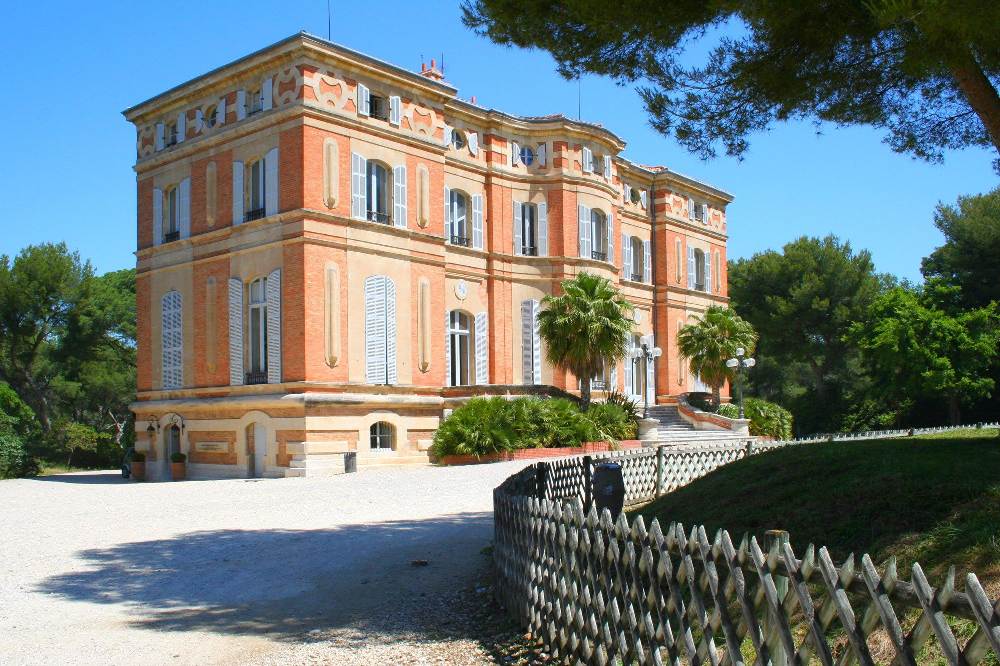
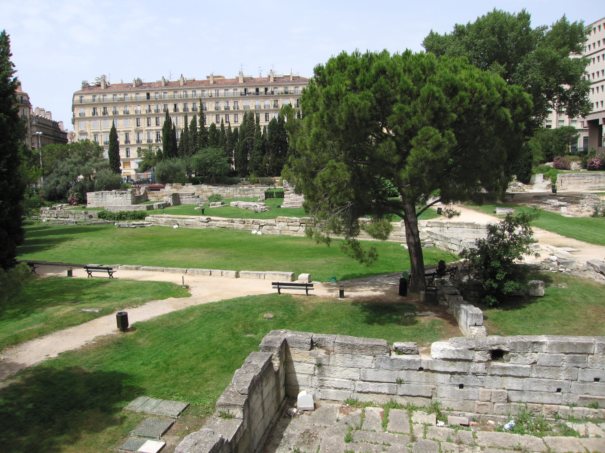
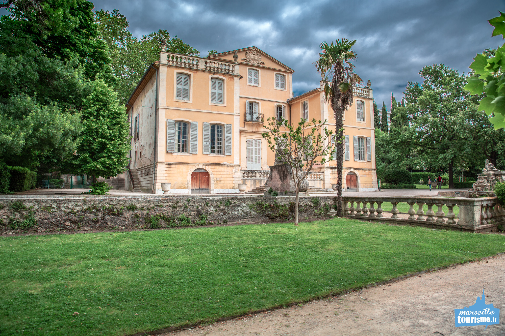
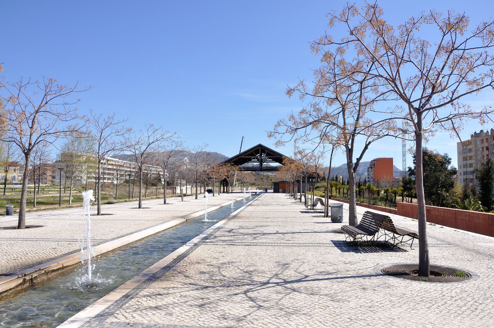
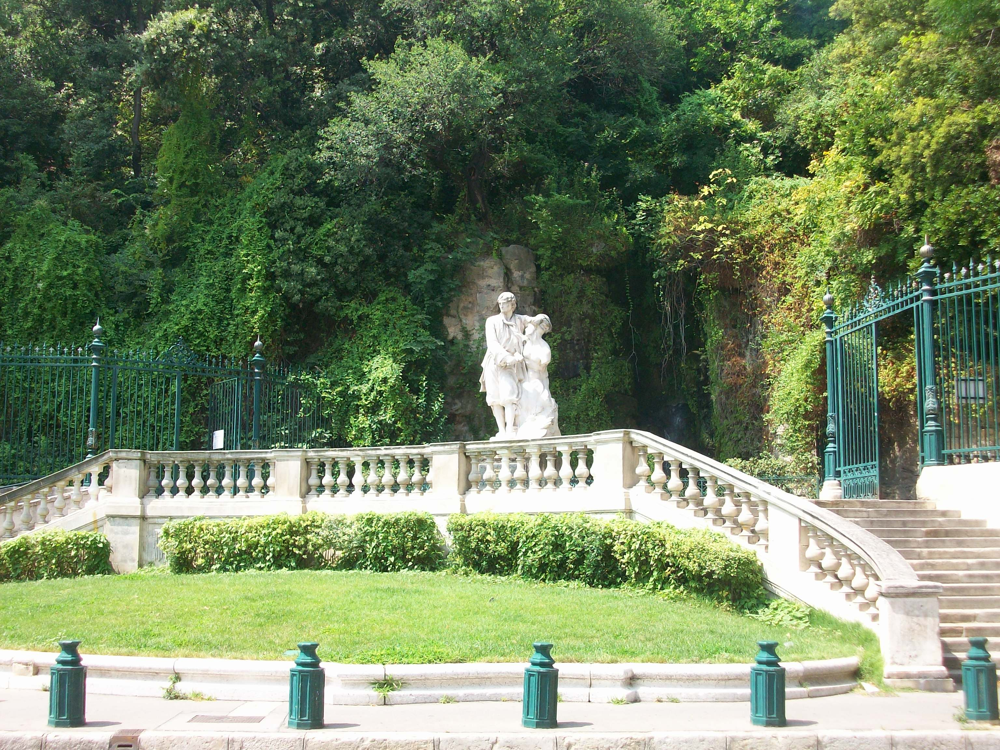
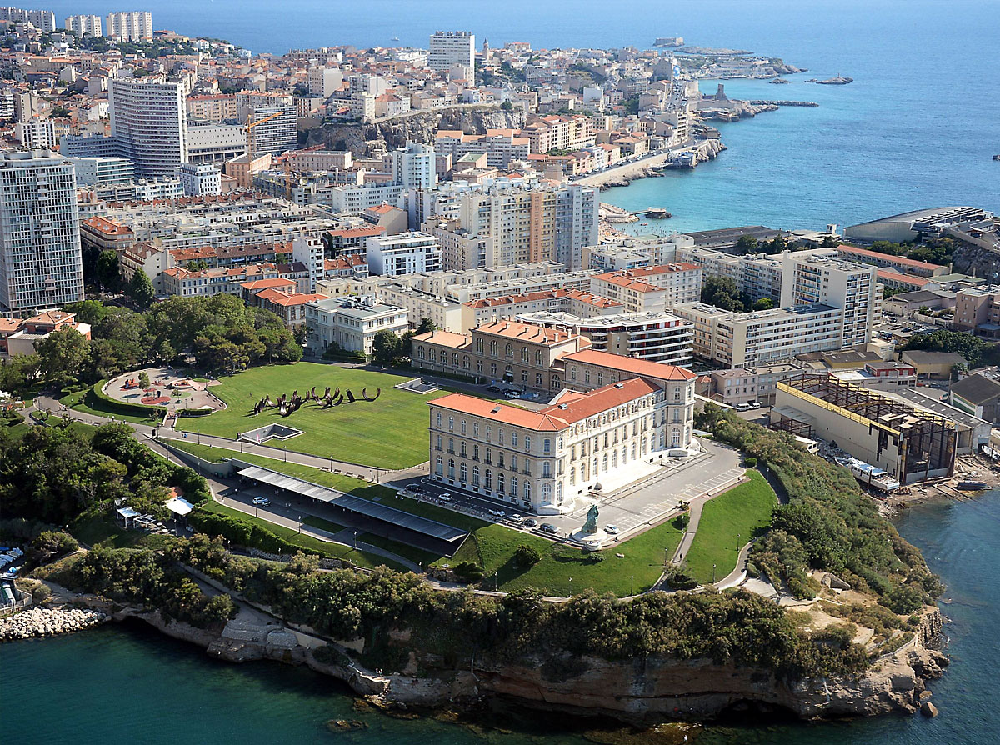

Entre la Pointe Rouge et la Grotte Rolland, le parc Pastré s’étire sur 112 hectares, jusqu’aux collines de Marseilleveyre. En 1974, la Comtesse Pastré, céda la majeure partie de sa propriété à la ville. Devenu, depuis un immense parc public, ce site est l’un des plus beaux fleurons du patrimoine municipal. Deux étangs, un canal, des aires et terrains de jeux, des sentiers de randonnées séduisent ses nombreux usagers.
Présentations des différents Parcs Publics de Marseille :
- Parc Pastré 
- Parc Borély
- Jardin des Vestiges 
- Jardin de la Magalone 

Ce jardin de 17 hectares abrite une bastide du XVIIIe siècle (Musée) mise en valeur par un jardin « à la française » et un parc paysager du XIXe siècle. Ses allées sont très prisées des joggers et des promeneurs qui apprécient également de flâner entre les massifs de la roseraie ou de découvrir les espèces rares du jardin botanique. Le plan d’eau, son embarcadère, sa buvette et son restaurant (en attente d’une nouvelle gérance) complètent les multiples attractions du site.
Le Jardin des Vestiges est un jardin abritant les vestiges archéologiques du Port antique de Marseille, en France. Le site, situé derrière le Centre Bourse dans le 1er arrondissement et qui fait l’objet d’un classement au titre des monuments historiques1, a été mis au jour en 1967. Le jardin a été créé par Joël-Louis Martin, architecte paysagiste et il fait aujourd'hui partie du Musée d'histoire de Marseille.
Au cœur de ce jardin niché sur le boulevard Michelet (surface 1,4 hectare), on trouve une des rares bastides du XVIIIe siècle, son propriétaire Messire Raphaël de Magalon, lui donna son nom. Le jardin fut redessiné en 1901 par le paysagiste Edouard André. Véritable jardin baroque, les valeurs et les perspectives, les espaces et les profondeurs prennent tout leur relief en y dessinant des formes géométriques.
- Parc du 26eme Centenaire 
- Jardin de la Colline Puget 
- Parc Longchamps
- Jardin du Pharo 
Parc Urbain de 10 hectares situé en plein coeur de Marseille, sur le site de l’ancienne gare du Prado. On y trouve un terrain de boules, et 2 aires de jeux pour enfants. En 2002 les 4 jardins thématiques ont été aménagés (provençal, oriental, africain et asiatique) symbolisant le brassage des cultures propres à Marseille.
C’est le plus ancien des jardins à Marseille ! Situé au sommet d’une colline en surplomb du Vieux Port, il se présente sous la forme de chemins qui serpentent à flanc de colline. Construit en 1801, les travaux vont se prolonger pendant plus de 50 ans. Les derniers agrandissements datent du Second Empire. En 1872, il prend le nom de « jardin de la Colline Puget », décision marquée par la pose d’un buste de Pierre Puget en haut d’une colonne à l’entrée du jardin. Le fort dénivelé promet une ascension plutôt ardue, ponctuée de bancs ombragés tout au long du chemin.

Le Parc Longchamp, s’est constitué au fil du temps, par la stratification des différents projets, imaginés ou réalisés sur le site, depuis le XIXe siècle. Le parc Longchamp, le parc Borély, le jardin de la Magalone et le parc du 26ème centenaire, ont obtenu en 2005 le label « jardin remarquable » décerné par le Ministère de la Culture. Ce fut un Jardin zoologique, de 1854 à 1987
Le jardin Emile Duclaux qui entoure le Palais du Pharo, se caractérise par une vue imprenable offerte sur le Vieux-Port et la côte nord de Marseille. Des cheminements, situés en bord de falaise, permettent en effet aux promeneurs de découvrir des points de vue étonnants et le site est idéal pour observer le ballet des ferries quittant le port, véritable invitation au voyage…Lors d’un séjour à Marseille en 1852, Louis Napoléon séduit par le site, émit le souhait de disposer d’une résidence les pieds dans l’eau. Le 15 août 1858 était posée la première pierre du Palais du Pharo.